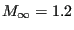
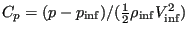
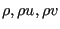
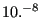
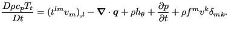

Next: Laminar viscous compressible compression Up: Simple example problems Previous: Transient laminar incompressible Couette Contents
In [68] the results of CFD-calculations for several airfoils are reported. Here, the computations for  (Mach number at infinity) and (angle of attack) are reported. The input deck for this calculation can be found in the fluid examples test suite for the Finite Element Method (agard05.inp).
To explain the differences in the input deck between incompressible and compressible flow the crucial section from the compressible input deck is reproduced below.
*EQUATION 2 3,2,-0.99030509E+00,3,1,-0.13890940E+00 2 3756,2,-0.99030509E+00,3756,1,-0.13890940E+00 ... *MATERIAL,NAME=AIR *CONDUCTIVITY 0. *FLUID CONSTANTS 1.,1.d-20,293. *SPECIFIC GAS CONSTANT 0.285714286d0 *SOLID SECTION,ELSET=Eall,MATERIAL=AIR *PHYSICAL CONSTANTS,ABSOLUTE ZERO=0. *INITIAL CONDITIONS,TYPE=FLUID VELOCITY Nall,1,0.99254615 Nall,2,0.12186934 Nall,3,0.d0 *INITIAL CONDITIONS,TYPE=PRESSURE Nall,0.49603175 *INITIAL CONDITIONS,TYPE=TEMPERATURE Nall,1.73611111 *VALUES AT INFINITY 1.73611111,1.,0.49603175,1.,1. ** *STEP,INCF=200000,SHOCK SMOOTHING=0.01 *CFD,STEADY STATE,COMPRESSIBLE 1.,1. *BOUNDARY BOU1,11,11,1.73611111 BOU1,1,1,0.99254615 BOU1,2,2,0.12186934 BOU1,8,8,0.49603175 Nall,3,3,0. *NODE FILE,FREQUENCYF=40000 VF,PSF,CP,TSF,TTF,MACH *END STEP
Since for compressible flow the temperature, velocity and pressure are linked through the ideal gas equation, the energy conservation equation is always used and the definition of the thermal conductivity and specific heat is mandatory. Inviscid flow is triggered by the definition of a zero viscosity and a zero thermal conductivity (therefore, the viscous terms in the conservation of momentum and conservation of energy equation disappear). Slip boundary conditions at the airfoil surface are realized through equations. The specific gas constant is defined with the appopriate keyword. It only depends on the kind of gas and not on the temperature. The physical constants card is used to define absolute zero for the temperature scale. This information is needed since the temperature in the gas equation must be specified in Kelvin. Initial conditions must be specified for the velocity, pressure and temperature. Careful selection of these values can shorten the computational time. The values at infinity (defined with the *VALUES AT INFINITY card) are used to calculate the pressure coefficient . In viscous calculations they can be used for the computation of the friction coefficient too. The smoothing parameter on the *STEP card is used to define shock smoothing and will be discussed in the next paragraph.
The COMPRESSIBLE parameter on the *CFD card indicates that this is a compressible CFD calculation. The consequence of this is that the ideal gas equation is used to link the density, pressure and temperature. Therefore, no *DENSITY card should be present in the input deck, and the *SPECIFIC GAS CONSTANT card is required. The use of the STEADY STATE parameter tells CalculiX that the calculation is stationary. Instationary calculations are triggered by dropping this parameter. In reality, all CFD-calculations in CalculiX are instationary. The STEADY STATE parameter, however, forces the calculations to be pursued until steady state is reached (so the time used is virtual). Transient calculations stop as soon as the final time is reached (the time is real).
In compressible calculations shock smoothing is frequently needed in order to avoid divergence. Shock smoothing, however, can change the solution. Therefore, the shock smoothing coefficient, which can take values between 0. and 2., should be chosen as small as possible. For the agard05 example a value of 0.01 was needed. In general, additional viscosity will reduce the shock smoothing needed to avoid divergence. There is a second effect of the shock smoothing coefficient: there is no clear steady state convergence any more. In order to understand this some additional information about the way CFD-calculations in CalculiX are performed. The initial increment size which is specified by the user underneath the *CFD card is a mechanical increment size. For each mechanical increment an instationary CFD-calculation is performed subject to the actual loads (up to steady state for a STEADY STATE calculation). For this CFD-calculation subincrements are used, the size of which depends on the physical characteristics of the flow (viscosity, heat conductivity etc.). They are determined such that stability is assured (or at least very likely). In CalculiX, steady state convergence is detected as soon as the change in the conservative variables (  etc.) from subincrement to subincrement does not exceed  times the actual values of these variables. In calculations with a nonzero shock smoothing coefficient the change in variables at first decreases down to a certain level about which it oscillates erraticaly. Therefore, it is likely that convergence will never be detected. The change in the conservative variables is stored in a file with the name jobname.fcv (assuming the input deck to be jobname.inp). The user may force convergence by limiting the number of subincrements with the INCF parameter on the *STEP card. As soon as INCF subincrements are calculated the CFD-calculation is assumed to be finished and the next mechanical increment is started.
The smoothing coefficient may be further reduced by choosing smaller CFD subincrements. The fifth entry underneath the *CFD-card is the factor by which the CFD increment size calculated based on physical parameters such as viscosity and local velocity is divided. Default is 1.25. The factor cannot be less than the default. For instance, a factor of 5. implies that the time increment is chosen as 20 % of the physically based time increment. Larger factors will decrease the need for shock smoothing but also linearly increase the computational time.
Figure 29 shows the mesh used for the agard05 calculation. It consists of linear wedge elements. In CalculiX, only linear elements (tetrahedra, hexahedra or wedges) are allowed for CFD-calculations. It is finer along the airfoil (but not as fine as needed to capture the boundary layer in viscous calculations). Figures 30 and 31 shows the Mach number and the pressure coefficient, respectively. The maximum Mach number in [68] is about 1.78, the maximum pressure coefficient is about -0.55. This agrees well with the present results. Increasing the shock smoothing coefficient leads to smoothing fringe plots, however, the actual values become worse.
The total temperature for this calculation (not shown here) was nearly constant. Recall that the total change of the total temperature along a stream line is given by:
|  | (1) |
The terms on the right hand side correspond to the viscous work (zero), the heat flow (nonzero, since the heat conduction coefficient is nonzero), the heat introduced per unit mass (zero), the change in pressure (zero in the steady state regime) and the work by external body forces (zero).